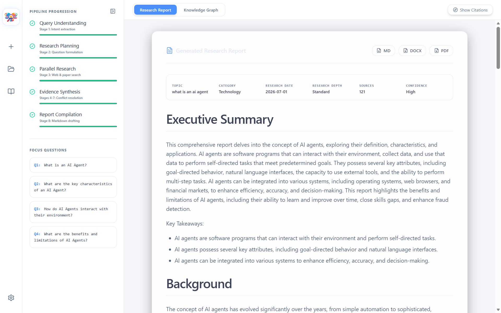
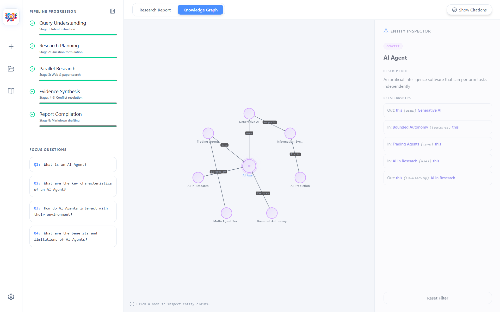
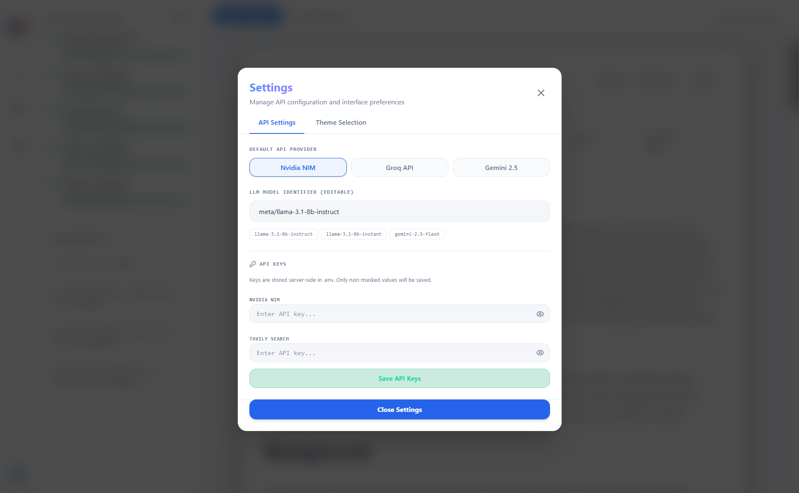

Introduction
NavosAI Research Agent is a production-grade, modular Research Agent that transforms any natural language learning query into a highly structured, evidence-backed research report. The platform coordinates a multi-stage pipeline of specialized agent components that work together asynchronously to analyze intents, formulate questions, perform parallel searches, score source credibility, and construct interactive knowledge graphs.
Sample Generated Output: "What is an AI Agent?"
Review the exact PDF research paper generated by the NavosAI agentic loop. Features multi-perspective credibility synthesis, formatted sections, and clickable citation links.
Core Features
Query Intent Understanding
Analyzes input queries, classifies targets, structures search domains, and breaks goals down into complex analytical objectives.
Parallel Research Engine
Runs concurrent asynchronous searches across Google/DuckDuckGo web APIs, ArXiv academic research bases, local PDF repositories, and GitHub libraries.
Evidence Credibility Grading
Ranks source documents by relevance and authority, stripping out low-quality inputs and validating evidence using custom evaluation prompts.
Interactive Knowledge Graphs
Builds dynamic, interactive SVG-based concept and relationship maps, highlighting claims and nodes with direct hover citations.
System Architecture
NavosAI is structured around an event-driven AI workflow, communicating agent states in real time using Server-Sent Events (SSE) from a Python-based FastAPI gateway to a React/Vite web interface.
FastAPI Async Backend
Built in Python utilizing asynchronous routing and LangChain/LangGraph abstractions. Features SSE process streams that broadcast live sub-task execution events.
React & SVG Visuals
A responsive React dashboard featuring an interactive SVG network visualization engine for knowledge entity mapping, combined with modern Tailwind CSS styling.
The Multi-Stage Pipeline
The core intelligence of NavosAI relies on specialized, decoupled agents executing distinct tasks in sequence:
The QueryAnalyzer evaluates user topics to define query complexity, research domains, target schemas, and identify if academic or commercial tools are needed.
The ResearchPlanner models the subject by mapping out dependencies, establishing key topics, and drafting structural sections. It generates highly specific queries to search for.
The EvidenceEvaluator grades raw text chunks retrieved by search tools. Chunks are scored for relevance, direct correlation to target questions, and source trust metrics before entering the knowledge repository.
The ConflictResolver checks for overlapping or contradicting assertions across web pages and academic journals, aligning facts using reasoning algorithms before building final reports.
Dynamic Entity & Relationship Graph
Rather than providing a flat text output, NavosAI generates an interactive knowledge map mapping key entities and their factual relationships.
Real-Time Server-Sent Events (SSE)
Since deep-dive research pipelines can take several minutes to run, the system keeps users engaged using real-time console updates:
event: agent_event
data: {
"agent": "QueryAnalyzer",
"status": "completed",
"message": "Structured query intent into 5 sub-questions."
}
event: agent_event
data: {
"agent": "ParallelResearcher",
"status": "active",
"message": "Searching ArXiv for mathematical bounds on agentic loops."
}
The React UI intercepts these SSE chunks and renders them in a collapsible, terminal-style console drawer.
Engineering Challenges Solved
Asynchronous LLM Throttle Control
Challenge: Running 10+ parallel researcher tasks triggered API rate-limit errors from Anthropic and OpenAI endpoints.
Solution: Designed an async queue system with semaphore limits and adaptive retry logic to maximize throughput without hitting limits.
SVG Collision & Network Dynamics
Challenge: Dynamically displaying 50+ nodes in raw SVG often caused overlap issues and unreadable graph clusters.
Solution: Developed a custom math-based repulsion algorithm in the React SVG component that positions nodes based on connection weight and page space bounds.
App Gallery
Visual tour of the NavosAI Research Agent platform interface.



Code & Deployment
The complete source code for NavosAI Research Agent is open-source and available on GitHub.